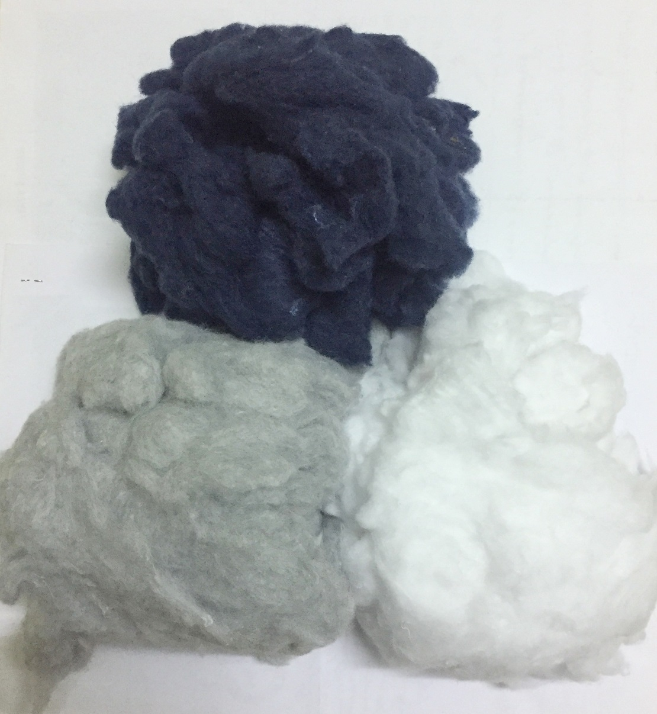
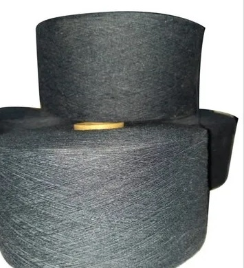
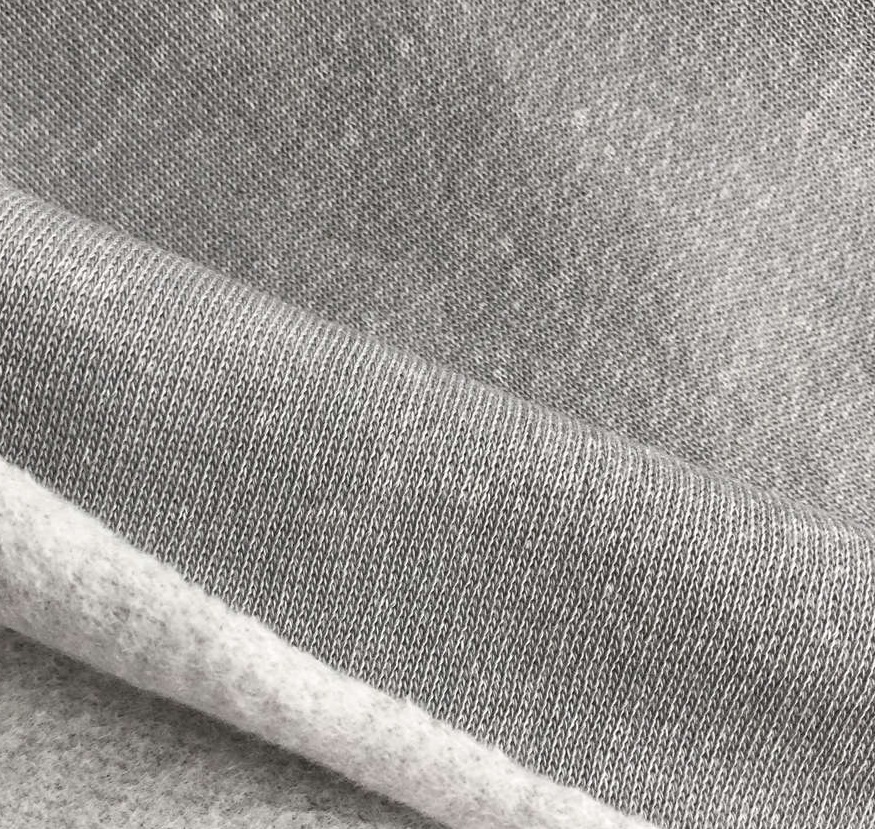

Our Products

Garment cutting waste
Garment cutting waste cleaned and segregated colour wise.
Availability: White, off-white, Black, Navy Blue, Grey Melange, Red, etc. in 100% Cotton, Cotton-Elastic and Cotton-Polyster.
Common Names: Cotton Rags, Chindi waste, Cotton clips.
HSN: 6310
Yarn Waste
Yarn wastes from spinning mills which can be recycled / cleaned / processed and reused.
Availability: Cotton and Viscose yarn in 40s and 60s count.
Common Name: Hard Waste
HSN: 5505


Recycled Cotton Fibre
Recycled fibre made from pre consumer fabric waste for spinning yarn upto 30Ne.
Available Colours - White, Cream, Black, Navy Blue, Red, Orange, Royal Blue, Turquoise Blue, Grey, Etc.
HSN: 5202
Recycled Yarn
Yarn made from open end spinning of a blend of fibres from Recycled PET bottles and pre consumer fabric waste
Available Colours - White, Cream, Black, Navy Blue, Red, Grey Melange, Anthra, etc.
Count : 14 Ne to 24 Ne
HSN: 5206


Recycled Cotton Fabric
Knitted fabric made from recycled fibre yarn.
Available Colours - White, Cream, Black, Navy Blue, Red, Grey Melange, Anthra, etc.
HSN: 5212